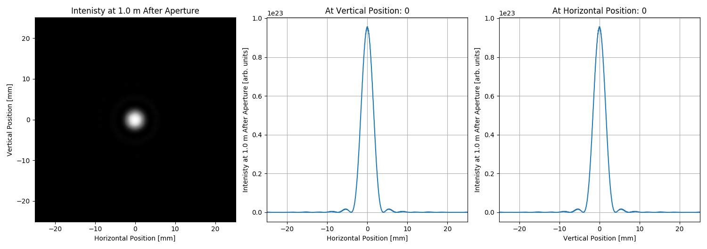

Note
Click here to download the full example code
SRW Example #16¶
Problem¶
The example was created by Timur Shaftan (BNL) for RadTrack project (https://github.com/radiasoft/radtrack). Adapted by Maksim Rakitin (BNL). The purpose of the example is to demonstrate good agreement of the SRW simulation of intensity distribution after diffraction on a circular aperture with an analytical approximation.
The example requires SciPy library to perform comparison.
Example Solution¶
- 
Out:
SRWLIB Python Example # 16:
Calculation of intensity distribution due to diffraction on a circular aperture.
Comparison with an analytical distribution...
Maximum intensity before and after propagation: [1.5047206578732545e+24, 9.560987085080381e+22]
Number of horizontal mesh points before and after propagation: [1120, 1152]
Number of vertical mesh points before and after propagation: [1120, 1152]
Wavefront horizontal start coordinates [mm] before and after propagation: [-0.01, -0.025075270515281814]
Wavefront horizontal end coordinates [mm] before and after propagation: [0.01, 0.02507527051528182]
Wavefront vertical start coordinates [mm] before and after propagation: [-0.01, -0.025075270515281814]
Wavefront vertical end coordinates [mm] before and after propagation: [0.01, 0.02507527051528182]
Vertical FWHM [mm] before and after propagation: [4.706168420219193, 3.381710448537803]
Analytical FWHM [mm]: 3.4023930367156776
done
from __future__ import print_function # Python 2.7 compatibility
import uti_plot
from srwlib import *
from uti_math import fwhm
print('SRWLIB Python Example # 16:')
print('Calculation of intensity distribution due to diffraction on a circular aperture.')
try:
from scipy.special import jv
scipy_imported = True
print('Comparison with an analytical distribution...')
except:
scipy_imported = False
print('Can not import scipy for comparison of the numerically calculated intensity distribution with an analytical approximation.')
#************************************* Create examples directory if it does not exist
example_folder = 'data_example_16' # example data sub-folder name
if not os.path.isdir(example_folder):
os.mkdir(example_folder)
strIntOutFileName = 'ex16_res_int.dat' # file name for output SR intensity data before propagation
strIntOutFileNameProp = 'ex16_res_int_prop_{}m.dat' # file name for output SR intensity data after propagation
#************************************* Perform SRW calculations
# Gaussian beam definition:
GsnBm = SRWLGsnBm()
GsnBm.x = 0 # Transverse Coordinates of Gaussian Beam Center at Waist [m]
GsnBm.y = 0
GsnBm.z = 0.0 # Longitudinal Coordinate of Waist [m]
GsnBm.xp = 0 # Average Angles of Gaussian Beam at Waist [rad]
GsnBm.yp = 0
GsnBm.avgPhotEn = 0.5 # Photon Energy [eV]
GsnBm.pulseEn = 1.0E7 # Energy per Pulse [J] - to be corrected
GsnBm.repRate = 1 # Rep. Rate [Hz] - to be corrected
GsnBm.polar = 6 # 0- Linear Horizontal / 1- Linear Vertical 2- Linear 45 degrees / 3- Linear 135 degrees / 4- Circular Right / 5- Circular / 6- Total
GsnBm.sigX = 2.0E-3 # Horiz. RMS size at Waist [m]
GsnBm.sigY = 2.0E-3 # Vert. RMS size at Waist [m]
GsnBm.sigT = 1E-12 # Pulse duration [fs] (not used?)
GsnBm.mx = 0 # Transverse Gauss-Hermite Mode Orders
GsnBm.my = 0
# Wavefront definition:
wfr = SRWLWfr()
NEnergy = 1 # Number of points along Energy
Nx = 300 # Number of points along X
Ny = 300 # Number of points along Y
wfr.allocate(NEnergy, Nx, Ny) # Numbers of points vs Photon Energy (1), Horizontal and Vertical Positions (dummy)
wfr.mesh.zStart = 0.35 # Longitudinal Position [m] at which Electric Field has to be calculated, i.e. the position of the first optical element
wfr.mesh.eStart = 0.5 # Initial Photon Energy [eV]
wfr.mesh.eFin = 0.5 # Final Photon Energy [eV]
firstHorAp = 2.0E-3 # First Aperture [m]
firstVertAp = 2.0E-3 # [m]
wfr.mesh.xStart = -0.01 # Initial Horizontal Position [m]
wfr.mesh.xFin = 0.01 # Final Horizontal Position [m]
wfr.mesh.yStart = -0.01 # Initial Vertical Position [m]
wfr.mesh.yFin = 0.01 # Final Vertical Position [m]
# Precision parameters for SR calculation:
meth = 2 # SR calculation method: 0- "manual", 1- "auto-undulator", 2- "auto-wiggler"
npTraj = 1 # number of points for trajectory calculation (not needed)
relPrec = 0.01 # relative precision
zStartInteg = 0.0 # longitudinal position to start integration (effective if < zEndInteg)
zEndInteg = 0.0 # longitudinal position to finish integration (effective if > zStartInteg)
useTermin = 1 # Use "terminating terms" (i.e. asymptotic expansions at zStartInteg and zEndInteg) or not (1 or 0 respectively)
sampFactNxNyForProp = 1 # sampling factor for adjusting nx, ny (effective if > 0)
arPrecPar = [meth, relPrec, zStartInteg, zEndInteg, npTraj, useTermin, sampFactNxNyForProp]
# Calculating initial wavefront:
srwl.CalcElecFieldGaussian(wfr, GsnBm, arPrecPar)
meshIn = deepcopy(wfr.mesh)
wfrIn = deepcopy(wfr)
arIin = array('f', [0] * wfrIn.mesh.nx * wfrIn.mesh.ny)
srwl.CalcIntFromElecField(arIin, wfrIn, 0, 0, 3, wfr.mesh.eStart, 0, 0)
arIinY = array('f', [0] * wfrIn.mesh.ny)
srwl.CalcIntFromElecField(arIinY, wfrIn, 0, 0, 2, wfrIn.mesh.eStart, 0, 0) # extracts intensity
# Plotting initial wavefront:
plotMeshInX = [1000 * wfrIn.mesh.xStart, 1000 * wfrIn.mesh.xFin, wfrIn.mesh.nx]
plotMeshInY = [1000 * wfrIn.mesh.yStart, 1000 * wfrIn.mesh.yFin, wfrIn.mesh.ny]
srwl_uti_save_intens_ascii(arIin, wfrIn.mesh,
'{}/{}'.format(example_folder, strIntOutFileName),
0, ['Photon Energy', 'Horizontal Position', 'Vertical Position', ''],
#_arUnits=['eV', 'm', 'm', 'ph/s/.1%bw/mm^2'])
_arUnits=['eV', 'm', 'm', 'arb. units'])
uti_plot.uti_plot2d1d(arIin, plotMeshInX, plotMeshInY,
#labels=['Horizontal Position [mm]', 'Vertical Position [mm]', 'Intensity Before Propagation [a.u.]'])
labels=['Horizontal Position', 'Vertical Position', 'Intensity Before Propagation'],
units=['mm', 'mm', 'arb. units'])
# Element definition:
apertureSize = 0.00075 # Aperture radius, m
defaultDriftLength = 1.0 # Drift length, m
OpElement = []
ppOpElement = []
OpElement.append(SRWLOptA('c', 'a', apertureSize, apertureSize))
ppOpElement.append([0.0, 0.0, 1.0, 0.0, 0.0, 1.0, 1.0, 1.0, 1.0, 0, 0, 0])
arIinymax = []
for k, driftLength in enumerate([0.0, defaultDriftLength]):
ppOpElement.append([1.0, 1.0, 1.0, 1.0, 1.0, 1.0, 1.0, 1.0, 1.0, 0, 0, 0])
if driftLength:
OpElement.append(SRWLOptD(driftLength)) # Drift space
ppOpElement.append([1.0, 1.0, 1.0, 1.0, 1.0, 1.0, 1.0, 1.0, 1.0, 0, 0, 0])
opBL = SRWLOptC(OpElement, ppOpElement)
srwl.PropagElecField(wfr, opBL) # Propagate Electric Field
polarization = 6 #0- Linear Horizontal / 1- Linear Vertical / 2- Linear 45 degrees / 3- Linear 135 degrees / 4- Circular Right / 5- Circular / 6- Total
intensity = 0 #0- Single-e Int. / 1- Multi-e Int. / 2- Single-e Flux / 3- Multi-e Flux / 4- Single-e Rad. Phase / 5- Re Single-e E-field / 6- Im Single-e E-field
dependArg = 3 #0- vs e / 1- vs x / 2- vs y / 3- vs x&y / 4- vs x&e / 5- vs y&e / 6- vs x&y&e
# Calculating output wavefront:
arIout = array('f', [0] * wfr.mesh.nx * wfr.mesh.ny) # "flat" array to take 2D intensity data
arII = arIout
arIE = array('f', [0] * wfr.mesh.nx * wfr.mesh.ny)
srwl.CalcIntFromElecField(arII, wfr, polarization, intensity, dependArg, wfr.mesh.eStart, 0, 0)
arI1y = array('f', [0] * wfr.mesh.ny)
arRe = array('f', [0] * wfr.mesh.ny)
arIm = array('f', [0] * wfr.mesh.ny)
srwl.CalcIntFromElecField(arI1y, wfr, polarization, intensity, 2, wfr.mesh.eStart, 0, 0) # extracts intensity
# Normalize intensities:
arI1ymax = max(arI1y)
arIinymax.append(max(arIinY))
for i in range(len(arI1y)):
arI1y[i] /= arI1ymax
for i in range(len(arIinY)):
arIinY[i] /= arIinymax[-1]
# Plotting output wavefront:
plotNum = 1000
plotMeshx = [plotNum * wfr.mesh.xStart, plotNum * wfr.mesh.xFin, wfr.mesh.nx]
plotMeshy = [plotNum * wfr.mesh.yStart, plotNum * wfr.mesh.yFin, wfr.mesh.ny]
srwl_uti_save_intens_ascii(arII, wfr.mesh,
'{}/{}'.format(example_folder, strIntOutFileNameProp.format(driftLength)),
0, ['Photon Energy', 'Horizontal Position', 'Vertical Position', ''],
_arUnits=['eV', 'm', 'm', 'ph/s/.1%bw/mm^2'])
uti_plot.uti_plot2d1d(arII, plotMeshx, plotMeshy,
#labels=['Horizontal Position [mm]', 'Vertical Position [mm]', 'Intenisty at {}m After Aperture [a.u.]'.format(driftLength)])
labels=['Horizontal Position', 'Vertical Position', 'Intenisty at {} m After Aperture'.format(driftLength)],
units=['mm', 'mm', 'arb. units'])
srwl.CalcIntFromElecField(arRe, wfr, polarization, 5, 2, wfr.mesh.eStart, 0, 0)
srwl.CalcIntFromElecField(arIm, wfr, polarization, 6, 2, wfr.mesh.eStart, 0, 0)
def calc_fwhm(intensities, wavefront, shift=0.5, mesh=True, factor=1e3):
if mesh:
y = []
for i in range(wfrIn.mesh.ny):
y.append((i - wavefront.mesh.ny / 2.0) / wavefront.mesh.ny * (wavefront.mesh.yFin - wavefront.mesh.yStart))
else:
y = wavefront
renormed_intensities = []
max_intensity = max(intensities)
for i in intensities:
renormed_intensities.append(float(i / max_intensity - shift))
return fwhm(y, renormed_intensities) * factor # in [mm] by default
parameters = [
['Maximum intensity before and after propagation', arIinymax[0], arI1ymax],
['Number of horizontal mesh points before and after propagation', wfrIn.mesh.nx, wfr.mesh.nx],
['Number of vertical mesh points before and after propagation', wfrIn.mesh.ny, wfr.mesh.ny],
['Wavefront horizontal start coordinates [mm] before and after propagation', wfrIn.mesh.xStart, wfr.mesh.xStart],
['Wavefront horizontal end coordinates [mm] before and after propagation', wfrIn.mesh.xFin, wfr.mesh.xFin],
['Wavefront vertical start coordinates [mm] before and after propagation', wfrIn.mesh.yStart, wfr.mesh.yStart],
['Wavefront vertical end coordinates [mm] before and after propagation', wfrIn.mesh.yFin, wfr.mesh.yFin],
['Vertical FWHM [mm] before and after propagation', calc_fwhm(arIinY, wfrIn), calc_fwhm(arI1y, wfr)],
]
for i in range(len(parameters)):
print('{}{}: [{}, {}]'.format(' ', *parameters[i]))
#************************************* 2. Defining parameters for analytic calculation
lam = 2.4796e-6 # 1.2398/0.5 eV
numPointsIn = len(arIinY)
numPointsOut = len(arI1y)
meshSize = float(wfr.mesh.xFin)
#************************************* 3. Computing intensity distribution as per Born & Wolf, Principles of Optics
th = []
sIn = []
sOut = []
analyticalIntens = []
for i in range(numPointsOut):
thx = 2.0 * (i - numPointsOut / 2.0 + 0.5) * meshSize / numPointsOut / driftLength
th.append(thx)
sOut.append(thx * driftLength * 1000)
if scipy_imported:
for i in range(numPointsOut):
x = 3.1415 * apertureSize * sin(th[i]) / lam
analyticalIntens.append((2 * jv(1, x) / x) ** 2)
print('{}Analytical FWHM [mm]: {}'.format(' ', calc_fwhm(analyticalIntens, sOut, mesh=False, factor=1.0)))
for i in range(numPointsIn):
sIn.append(2000.0 * (i - numPointsIn / 2.0) * float(wfrIn.mesh.xFin) / numPointsIn)
#************************************* 4. Plotting
try:
from matplotlib import pyplot as plt
fig = plt.figure(figsize=(10, 7))
ax = fig.add_subplot(111)
ax.plot(sIn, arIinY, '--g.', label='SRW (before aperture)')
ax.plot(sOut, arI1y, '-r.', label='SRW ({}m after aperture)'.format(driftLength))
if analyticalIntens:
ax.plot(sOut, analyticalIntens, '-b.', label='Analytical estimation')
ax.legend()
ax.set_xlabel('Vertical Position [mm]')
ax.set_ylabel('Normalized Intensity')
ax.set_title('Intensity Before and After Propagation\n(cut vs vertical position at x=0)')
ax.grid()
plt.savefig('{}/compare.png'.format(example_folder))
plt.show()
except:
pass
print('done')
Total running time of the script: ( 0 minutes 10.166 seconds)